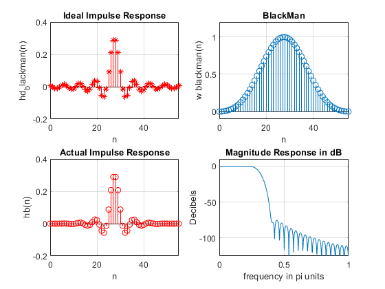
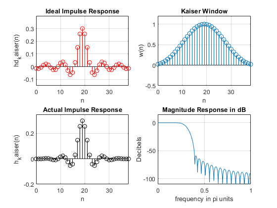
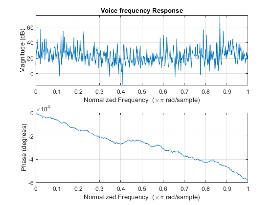
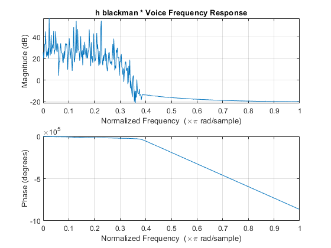
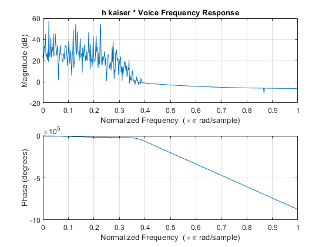

Digital Signal Processing MATLAB HW2 - q1
Professor: Dr. Sheikhzadeh Author: [SeyedAli] - [SeyedHosseini] E-mail: [alisnake@aut.ac.ir] %which I`m about to change ASAP University: Amirkabir University of Technology
Contents
Clear recent data
clear; close all; clc;
Part A
wp = 0.2*pi; %Frequency of Passing ws = 0.4*pi; %Frequency of Stoping tr_width = ws - wp; %Transition Band Mb = ceil(11*pi/tr_width) + 1 ; % Length Of Window With Exact Formula in Table 7.1 of Signal Processing Book nb=[0:1:Mb-1] ; %Samples display(Mb) % wc = (ws+wp)/2 ; % Ideal LPF cutoff frequency hdb = ideal_lp(wc,Mb); %Impulse Response of Desierd h(n)(BlackMan) w_black = (blackman(Mb))'; %blackman window with M = 56 but we must transpose it in order to stop miscalculation hb = hdb .* w_black; %Impulse Response of Designed Filter [db,mag,pha,grd,w] = freqz_m(hb,[1]); %Modified Version of Frequency domain response delta_w = 2*pi/1000; %Minimum of Error in PassBand Magnitude
Mb =
56
plots
figure(1) subplot(2,2,1); stem(nb,hdb,"r*"); grid on title('Ideal Impulse Response') axis([0 Mb-1 -0.2 0.4]); xlabel('n'); ylabel('hd_blackman(n)'); subplot(2,2,2); stem(nb,w_black); grid on title('BlackMan') axis([0 Mb-1 -0.1 1.2]); xlabel('n'); ylabel('w blackman(n)'); subplot(2,2,3); stem(nb,hb,"r"); grid on title('Actual Impulse Response'); axis([0 Mb-1 -0.2 0.4]); xlabel('n'); ylabel('hb(n)'); subplot(2,2,4); plot(w/pi,db); title('Magnitude Response in dB'); grid on; axis([0 1 -125 10]); xlabel('frequency in pi units'); ylabel('Decibels'); %Actual Rp and As Rp = -(min(db(1:1:wp/delta_w+1))); % Actual Passband Ripple As = -round(max(db(ws/delta_w+1:1:501))); % Min Stopband attenuation display(Rp) display(As)
Rp =
0.0033
As =
74
 Part B (Kaiser Design)
wp = 0.2*pi; %PassBand Frequency ws = 0.4*pi; %StopBand Frequency As = 60; %Desired StopBand Attenuation tr_width = ws - wp; %Transition Band Mk = ceil((As-7.95)/(2.285*tr_width)+1) + 1 ; % Length Of Window display(Mk) nk=[0:1:Mk-1]; %Smaples beta = 0.1102*(As-8.7) ; %For As >= 50 display(beta) wc = (ws+wp)/2; %CutOff Frequency hdk = ideal_lp(wc,Mk); %Desired h(n) w_kai = (kaiser(Mk,beta))';% Kaiser Window with M = 39 (Notice that length of kaiser window is less than Blackman) hk = hdk .* w_kai; %Impulse response of Desired filter h(n) [db,mag,pha,grd,w] = freqz_m(hk,[1]);%Modified Version of Frequency domain response delta_w = 2*pi/1000; %Minimum of Error in PassBand Magnitude As_k = -round(max(db(ws/delta_w+1:1:501))) % Min Stopband Attenuation
Mk =
39
beta =
5.6533
As_k =
59
Plots
figure(2) subplot(2,2,1); stem(nk,hdk,"r-"); grid on title('Ideal Impulse Response') axis([0 Mk-1 -0.15 0.4]); xlabel('n'); ylabel('hd_kaiser(n)') subplot(2,2,2); stem(nk,w_kai);grid on title('Kaiser Window') axis([0 Mk-1 -0.5 1.2]); xlabel('n'); ylabel('w(n)') subplot(2,2,3); stem(nk,hk,"ko"); title('Actual Impulse Response');grid on axis([0 Mk-1 -0.2 0.35]); xlabel('n'); ylabel('h_kaiser(n)') subplot(2,2,4); plot(w/pi,db); title('Magnitude Response in dB');grid on axis([0 1 -110 15]); xlabel('frequency in pi units'); ylabel('Decibels')
Part C
[voice , Fs] = audioread('multi_tone.wav') ;%STORING AUDIO in Voice figure(3) freqz(voice); %Plotting the Frequeny Response of Voice itself title('Voice frequency Response') voice_b = filter(hb,1,voice); %using filter command to convolution h_blackman and voice voice_b = voice_b' ; figure(4) freqz(voice_b); %Plotting the Frequeny Response of h_blackman * voice title('h blackman * Voice Frequency Response') voice_k = filter(hk,1,voice); %using filter command to convolution h_kaiser and voice voice_k = voice_k' ; figure(5) freqz(voice_k); %Plotting the Frequeny Response of h_kaiser * voice title('h kaiser * Voice Frequency Response')  
Function of Ideal Low Pass Filter
function hd = ideal_lp(wc,M); % Ideal LowPass filter computation % -------------------------------- % [hd] = ideal_lp(wc,M) % hd = ideal impulse response between 0 to M-1 % wc = cutoff frequency in radians % M = length of the ideal filter % alpha = (M-1)/2; n = [0:1:(M-1)]; %time samples m = n - alpha; fc = wc/pi; %Cut off frequency in Hz hd = fc*sinc(fc*m); %Creating desired H Function end
Function for Frequency Response Calculations
function [db,mag,pha,grd,w] = freqz_m(b,a); % Modified version of freqz subroutine % ------------------------------------ % [db,mag,pha,grd,w] = freqz_m(b,a); % db = Relative magnitude in dB computed over 0 to pi radians % mag = absolute magnitude computed over 0 to pi radians % pha = Phase response in radians over 0 to pi radians % grd = Group delay over 0 to pi radians % w = 501 frequency samples between 0 to pi radians % b = numerator polynomial of H(z) (for FIR: b=h) % a = denominator polynomial of H(z) (for FIR: a=[1]) % [H,w] = freqz(b,a,1000,'whole'); H = (H(1:1:501)); w = (w(1:1:501)); mag = abs(H); db = 20*log10((mag+eps)/max(mag)); pha = angle(H); grd = grpdelay(b,a,w); end